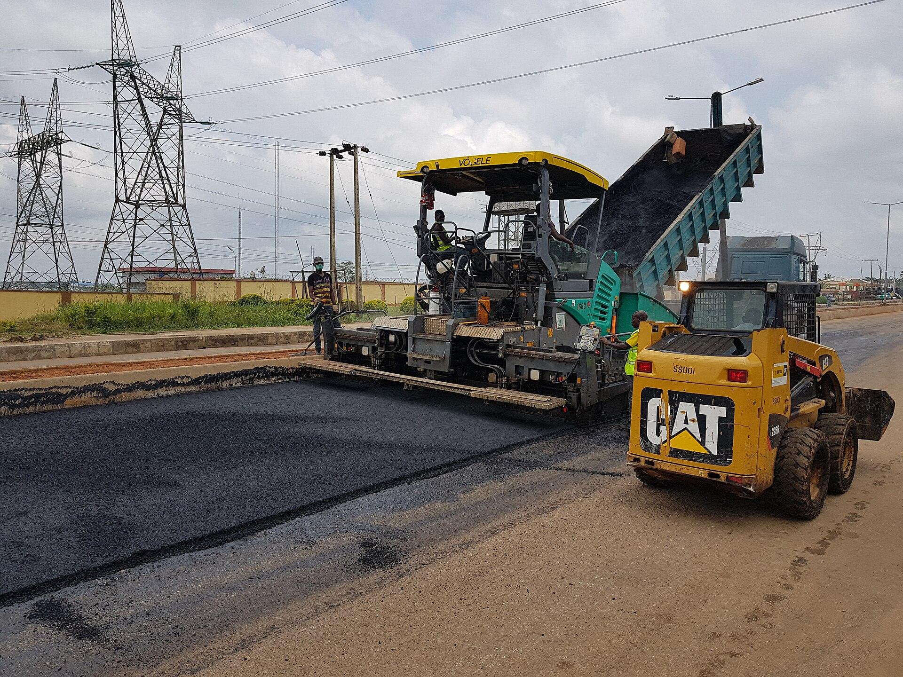

คุยรายละเอียดหน้างาน
ส่งรูป พิกัด และขนาดพื้นที่ทาง LINE เพื่อคุยขอบเขตงานลาดยางมะตอย
ASPHALT PAVING / TRS CONSTRUCTION
ลาดยางมะตอย
ถนนและลานจอดรถ
เตรียมพื้น ลาดยาง และบดอัด
คุยรายละเอียดหน้างานกับทีมโดยตรง

พร้อมคุยรายละเอียดงานงานด่วนโทรได้เลย เครื่องจักรครบ เริ่มงานไว
ดูภาพตัวอย่างทั้งหมดภาพประกอบสำหรับต้นแบบ ไม่ใช่ผลงานบริษัท
เลือกภาพเล็กเพื่อดูภาพใหญ่
ส่งรูป พิกัด และขนาดพื้นที่ทาง LINE เพื่อคุยขอบเขตงานลาดยางมะตอย
เตรียมพื้นและวางแผนระดับ ก่อนลาดยางมะตอยตามขอบเขตงาน
บดอัดผิวทางและเก็บรายละเอียด ก่อนส่งมอบงานตามที่ตกลง